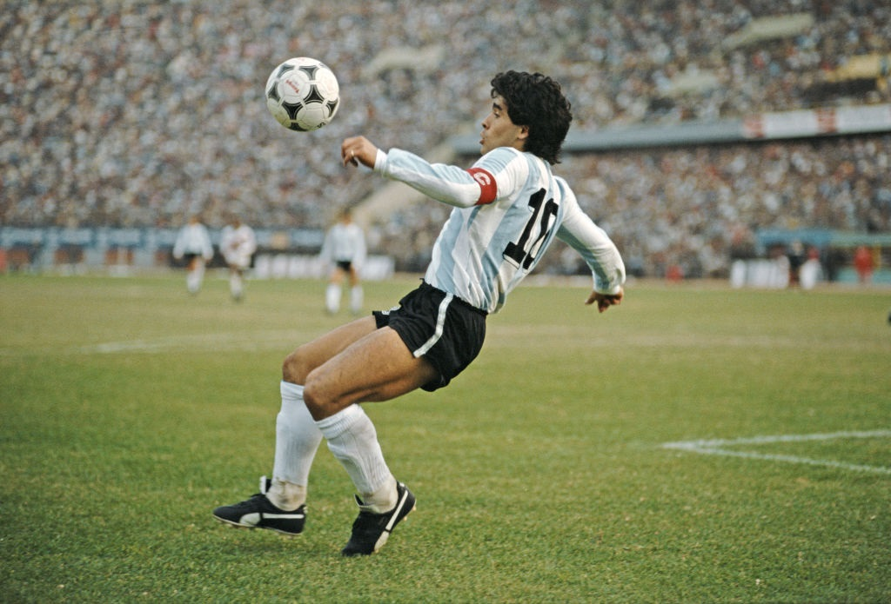
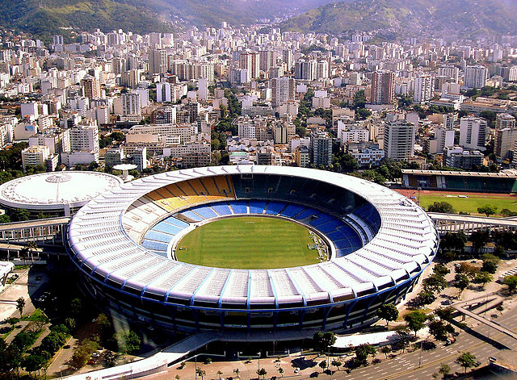
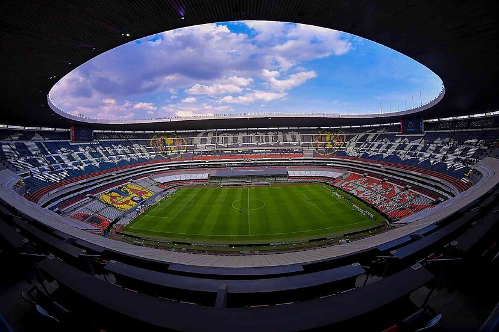

Jugadores Emblemáticos

Lionel Messi

Pelé

Diego Maradona
Partidos Emblemáticos
Desde finales históricas hasta partidos de eliminatorias inolvidables que marcaron la historia del fútbol.

Estadios Emblemáticos

Estadio Maracaná - Brasil

Estadio Azteca - México